方法、證據與日常應用
2026-09-20
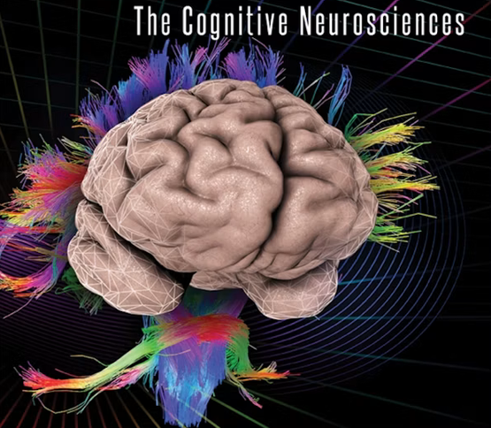
先回答第三個問題，因為前兩個問題的答案品質，取決於第三個。
| 時間 | 內容 |
|---|---|
| 5–40 | 第一部：腦科學怎麼研究腦？腦區與功能對應到哪裡？ |
| 40–50 | Slido A |
| 50–100 | 第二部：《FBI教你讀心術》哪些對、哪些錯？ |
| 100–110 | Slido B |
| 110–140 | 第三部：把正確的知識用在日常生活 |
| 140–150 | Slido C |
Slido 匿名、不排名，用來檢查理解，讓我知道哪裡要加強講解。
提問請用 Q&A 面板，全程開放。
讀完一本書提出問題，就是研究的開始。
今天所有校園情境、對話與人物都是虛構的，不是真實同學。
三類方法，各回答不同的問題：
| 方法 | 能回答的問題 |
|---|---|
| 病灶研究 | 沒有這一區，哪些功能會出問題？ |
| 電刺激 | 刺激這一點，會出現什麼感覺或動作？ |
| 功能性腦造影 | 做某項任務時，哪裡的血氧訊號增加？ |
沒有任何一種方法能單獨證明「某區專管某功能」。
這告訴我們什麼？
沒有海馬迴，新記憶出問題。
這沒有告訴我們什麼？
記憶「儲存在」海馬迴。舊記憶還在，就是反例。
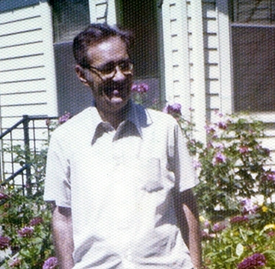
H.M.（Henry Molaison）
照片來源：MIT News（2009）
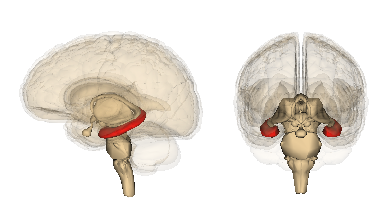
紅色：海馬迴的位置（左：側面透視；右：正面透視）
圖：Anatomography／Life Science Databases，CC BY-SA 2.1 JP，取自 Wikimedia Commons
所以杏仁核是「恐懼中心」？
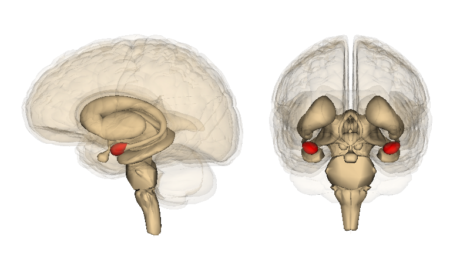
紅色：杏仁核的位置，左右各一，在顳葉內側深處
圖：Anatomography／Life Science Databases，CC BY-SA 2.1 JP，取自 Wikimedia Commons
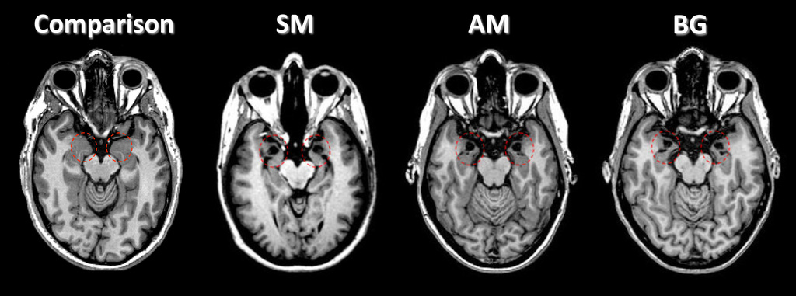
左起：比較個案、S.M.、A.M.、B.G.。紅色虛線圈出杏仁核位置；S.M. 的雙側杏仁核受損。
MRI：Iowa Neurological Patient Registry／University of Iowa，取自 Iowa Now（2013）
同一類病人吸入高濃度二氧化碳，仍然出現恐懼與恐慌。
杏仁核參與由外界線索引發的恐懼，但恐懼不只靠杏仁核。
病灶告訴我們「沒有這一區，某功能會出問題」， 不等於「這一區就是該功能的所在地」。
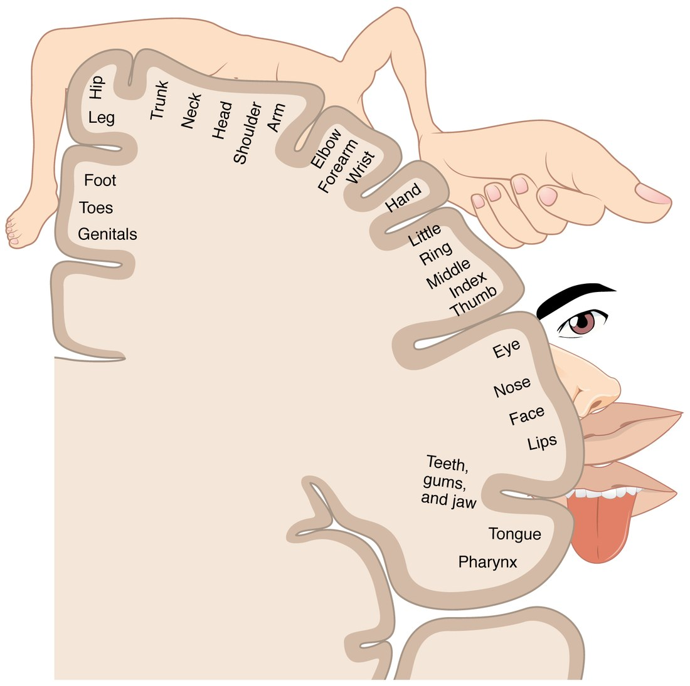
教科書版的體感覺「皮質小人」：手與嘴佔的皮質面積特別大
圖：OpenStax, Anatomy & Physiology，CC BY 3.0，取自 Wikimedia Commons
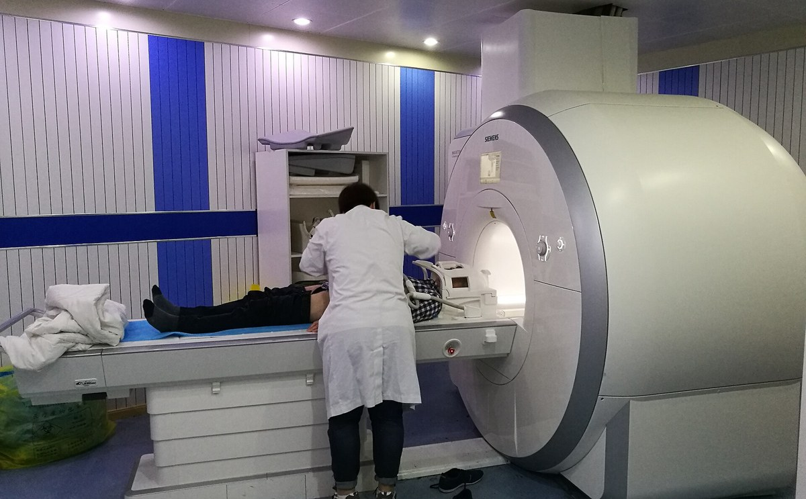
磁振造影儀：受試者躺在裡面做任務
圖：Ptrump16，CC BY-SA 4.0，取自 Wikimedia Commons
想一想：要從「杏仁核活動增加」推論「他害怕」，還需要哪些證據？
兩個實驗都沒有腦影像，卻是後續腦研究的基礎。
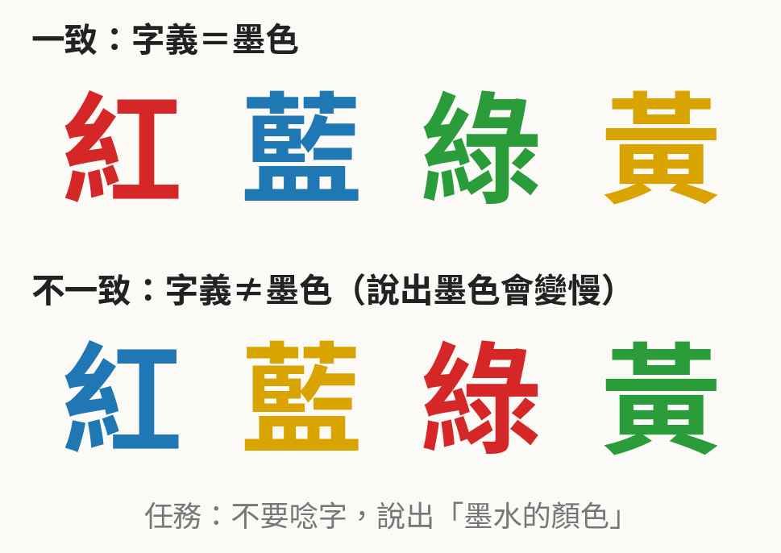
圖：自製（中文版色詞示意，非 Stroop 1935 原始材料）
有腦圖的說法，也不代表比較可信。
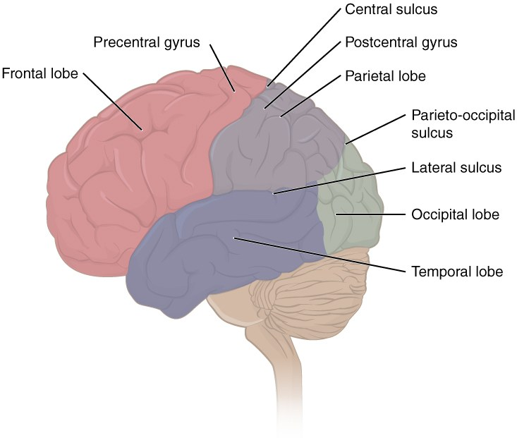
大腦皮質的四個葉：額葉、頂葉、顳葉、枕葉
圖：OpenStax, Anatomy & Physiology 2e，CC BY 4.0，取自 Wikimedia Commons
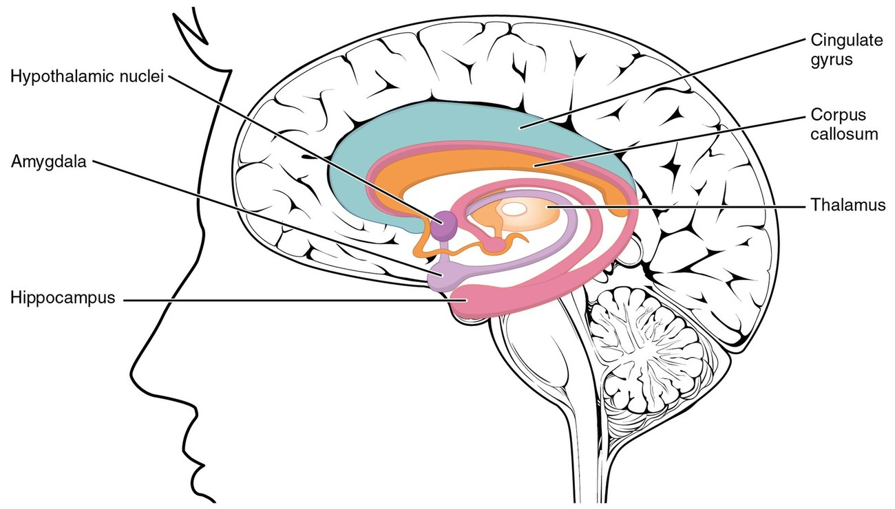
內側面：扣帶回、海馬迴、杏仁核。歷史上被合稱「邊緣葉／邊緣系統」
圖：OpenStax, Anatomy & Physiology，CC BY 3.0，取自 Wikimedia Commons
| 腦區 | 較穩定的功能 | 不能推的結論 |
|---|---|---|
| 初級視覺、聽覺、體感、運動皮質 | 感覺輸入與動作輸出的地圖式對應 | 只做「低階」工作；其實也受注意與預期調節 |
| 顳葉內側／海馬迴 | 形成新的陳述性記憶、空間記憶 | 記憶像錄影保存在此 |
| 梭狀回臉孔區 | 對臉孔反應高於其他測試物件 | 只處理臉；看到它活動就知道對方在看臉 |
| 杏仁核 | 威脅學習、情緒顯著性、辨認恐懼表情 | 杏仁核＝恐懼中心＝無意識誠實腦 |
| 前額葉皮質 | 計畫、抑制、工作記憶、規則切換 | 前額葉＝說謊腦 |
| 「邊緣系統」 | 歷史上把海馬迴、杏仁核、扣帶回歸為一組 | 一個界線清楚、專管情緒的「情緒腦」 |
分工存在，但一區多用。 同一腦區在不同任務中反覆被徵用，功能對應是多對多。
功能來自網路互動。 情緒與認知在腦中不是分居兩處的鄰居。
情緒有沒有專屬腦區，仍在爭論。
邀請信的說法：無意識在邊緣系統，有意識在新皮質。
現有研究的分法不是這樣：
意識的判定來自任務與對照，不是看哪一區亮。
「無意識」與「有意識」是處理狀態， 「邊緣系統」與「新皮質」是解剖位置， 「誠實」與「說謊」是內容與意圖。
三組概念各自有定義，不能用等號串起來。
5 題 quiz，每題 1 分鐘。
Joe Navarro 與 Marvin Karlins 合著
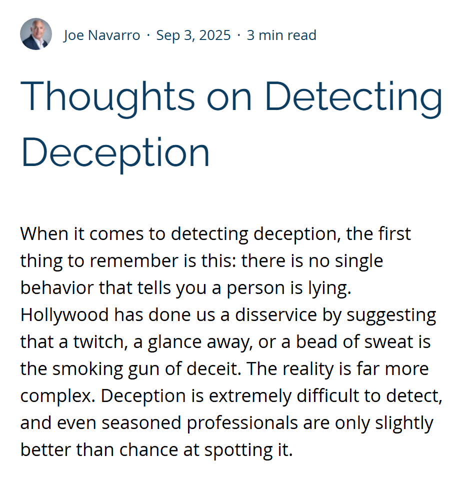
作者 2025 年的公開文章：沒有單一行為可以判定說謊；仍主張從行為變化與組合觀察不適。
網頁擷圖（節錄署名、標題與第一段）：Navarro, J. (2025, Sept 3). Thoughts on Detecting Deception. jnforensics.com
人類腦緣系統所控制的情緒反應多屬無意識歷程，而大腦新皮質則掌管意識層面的思考與判斷，因此具有進行欺瞞的能力⋯⋯概括為「誠實腦」與「說謊腦」的概念。
今天把它列為待檢驗的神經推論。
| 書中方向 | 支持證據 |
|---|---|
| 非語言行為有訊息 | 跨文化情緒辨識高於機遇；身體情境影響強烈情緒的判讀 |
| 威脅下身體有可測反應 | 看生氣表情時，身體搖晃減少、心率減慢 |
支持到哪裡？ 表達不是雜訊；威脅與身體調節有可測關係。
還沒支持什麼？ 材料多為表演或極端情境；沒有測欺瞞，沒有操弄意識。
| 書中方向 | 評價 |
|---|---|
| 看情境、看基準、看變化 | 合理原則；是否提升準確率仍須另外測 |
| 沒有單一動作等於說謊 | 書與研究在此一致 |
| 觀察「舒適／不適」比「讀出想法」保守 | 方向可取；但仍是推論，不是觀察 |
這些是真的。不能因為後面要批評就省略。
三層錯誤：
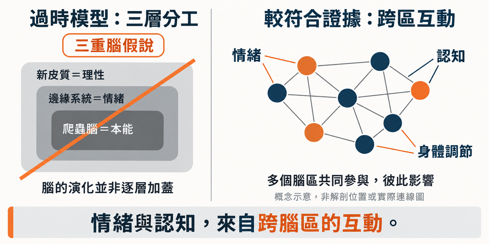
「邊緣系統」不是界線清楚、專門負責情緒的獨立單位。
概念圖：AI 輔助重繪｜依據 Cesario et al. 2020；Pessoa 2018
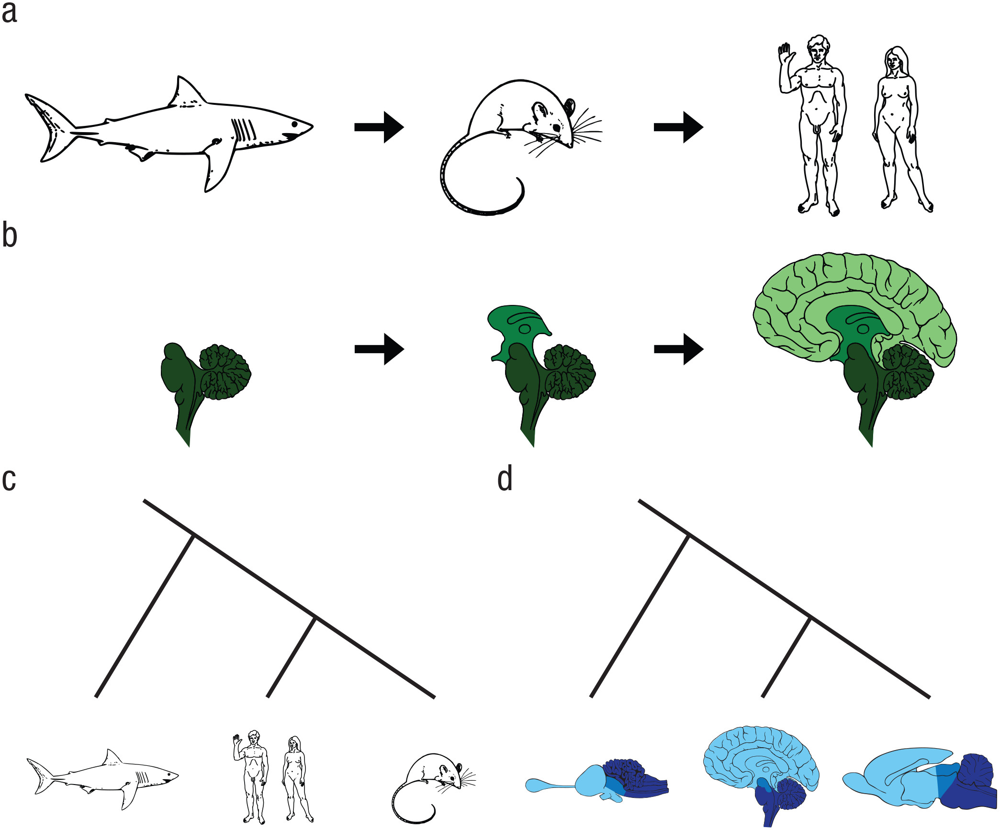
a、b｜錯誤觀點
c、d｜修正觀點
腦的演化，是既有結構的改變與分化。
d 的顏色用來對照基本腦區，不代表本能、情緒、理性的分工。
圖：Cesario, Johnson, & Eisthen (2020), Fig. 1｜Your Brain Is Not an Onion With a Tiny Reptile Inside
從左到右，說出字的墨色。
這是中文色詞的課堂示意，沒有正式計時；不用比較個人的快慢。
圖：既有中文色詞示意，非原始實驗材料｜依據 Stroop (1935), Journal of Experimental Psychology, 18, 643–662
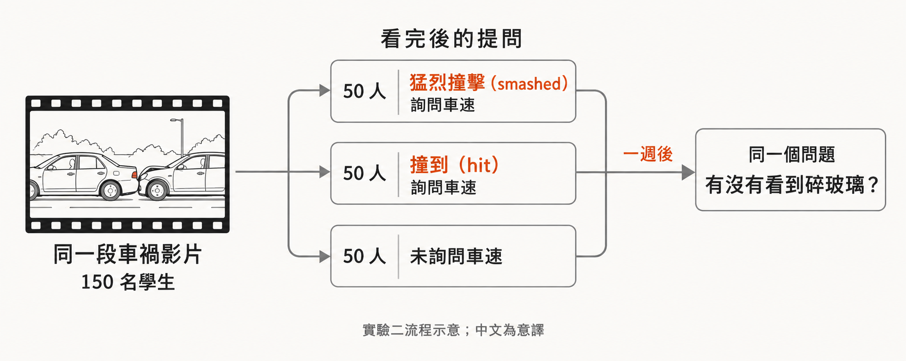
一週後不重看影片，再問：「有沒有看到碎玻璃？」
實驗二流程示意：AI 輔助製圖；車禍畫面為示意，非原片截圖；中文為意譯｜Loftus & Palmer (1974), pp. 587–588
| 先前問法 | 回答「有看到」 |
|---|---|
| 猛烈撞擊（smashed） | 16／50 |
| 撞到（hit） | 7／50 |
| 沒問車速 | 6／50 |
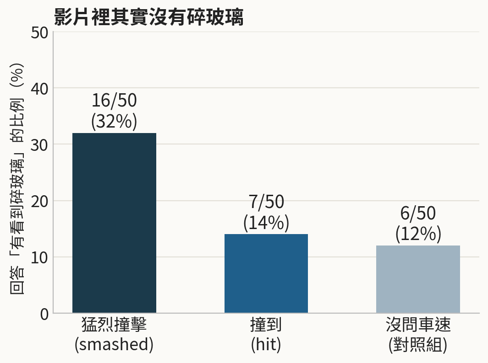
圖：自製，數據取自 Loftus & Palmer (1974) 實驗二 Table 2
影片裡沒有碎玻璃。人可以不假思索地、誠實地報出記錯的內容。
同一套控制也用於誠實地克制衝動、遵守規則。 前額葉活動不能反推「正在說謊」。這正是第一部的逆推論問題。
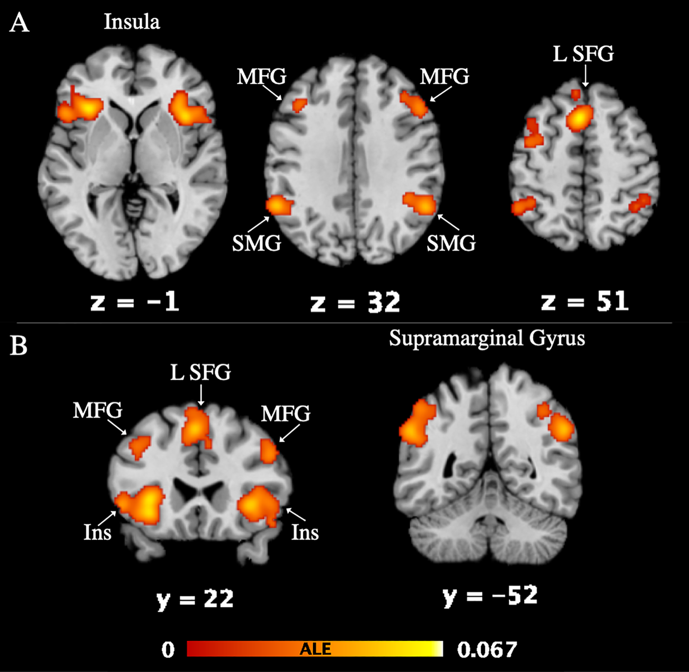
說謊＞說實話的統合分析結果：腦島（Ins）、額葉內側與上側（MFG、SFG）、緣上回（SMG），兩側多處同時出現
圖：Meier et al. (2021), PLOS ONE, 16, e0248909, Fig 2，CC BY 4.0
從「動作是自動的」到「動作透露的內容是真的」，至少跳了三步：
四個獨立的軸：
自動程度 ｜ 意識狀態 ｜ 內容正確 ｜ 欺騙意圖
「誠實腦／說謊腦」不是腦科學的分類， 而是把三組不同概念用等號串起來的說法。
有些研究確實找到真假組的行為差異：
但整體來看：
透鏡模型統合分析（153 個樣本）：
206 份研究、24,483 名判斷者，無工具、無訓練的即時判斷。
它是什麼
它不是什麼
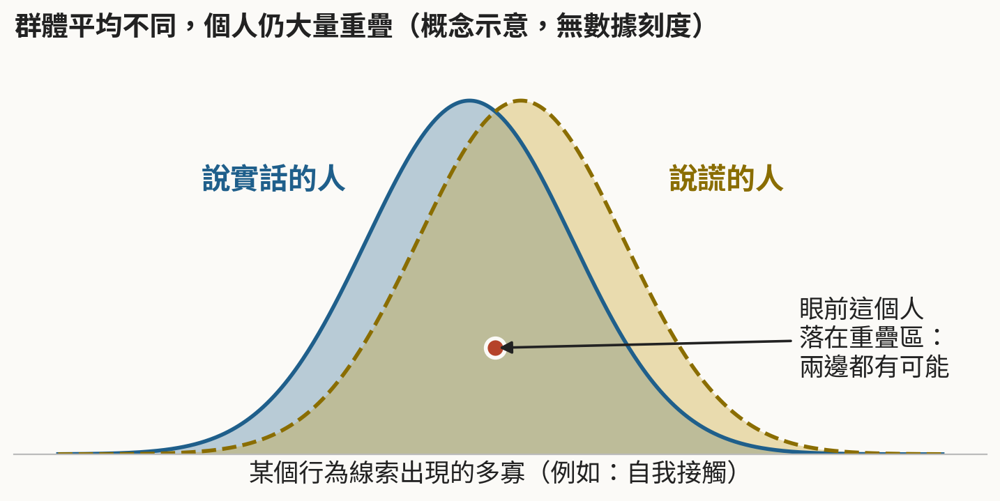
研究找到的是兩條曲線的平均差一點點；要判定眼前這一個人，得知道他落在哪裡，而重疊區很大。
圖：自製概念示意，曲線位置不代表任何一項研究的實際數值
| 實際／判斷 | 判為說謊 | 判為誠實 |
|---|---|---|
| 實際說謊 | 抓到謊言 | 漏掉謊言 |
| 實際誠實 | 冤枉誠實者 | 正確相信 |
被追問而緊張的人，可能說謊，也可能只是害怕被懷疑。
測謊儀（美國國家研究委員會，2003）
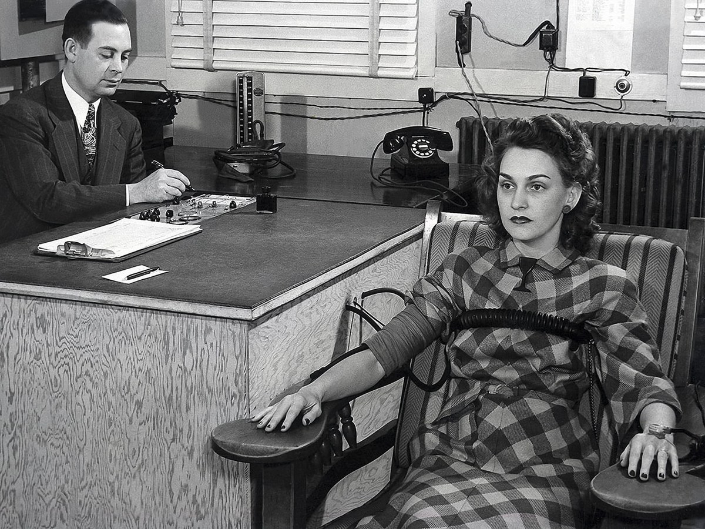
約 1945 年美國 Clinton Engineer Works 的測謊施測：記錄呼吸、血壓、膚電，量的是生理激發，不是謊言本身
圖：Ed Westcott（美國政府攝影），公眾領域，取自 Wikimedia Commons
fMRI 測謊（回顧，2014）
腦波隱匿訊息測驗（統合分析，2025）
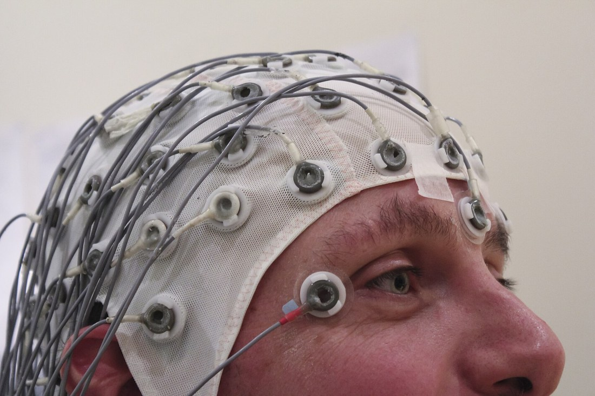
腦波（EEG）電極帽
圖：Chris Hope，CC BY 2.0，取自 Wikimedia Commons
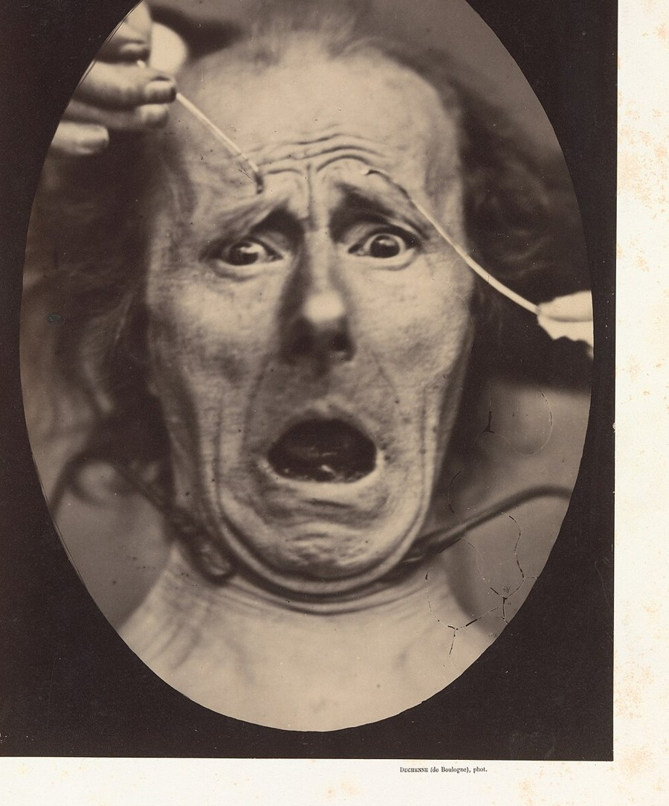
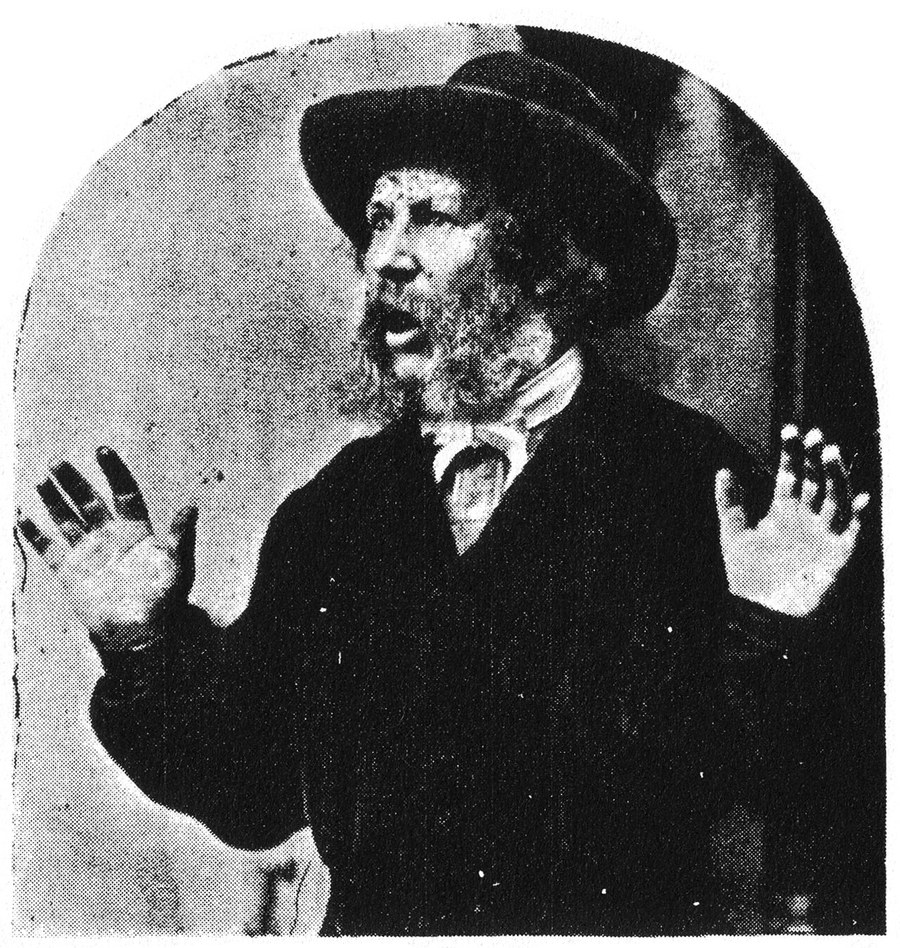
左：Duchenne 以電刺激臉部肌肉拍下的「表情」（1854–56 拍攝，1862 出版）。右：Darwin《人與動物的情緒表達》（1872）圖版 VII
圖：皆為公眾領域，取自 Wikimedia Commons（左：大都會藝術博物館藏，CC0）
兩派都不支持「一個動作對應一個內心狀態」的查字典式讀法。
| 層次 | 待檢驗主張 | 這本書 |
|---|---|---|
| 訊息 | 動作與情緒、壓力、互動狀態有關 | 有支持 |
| 判讀 | 觀察者能從動作辨認狀態 | 部分支持 |
| 個人預測 | 技巧能用於陌生人及新情境 | 證據不足 |
| 原因與真假 | 看到動作便知道原因及是否說謊 | 跳步 |
| 神經解釋 | 不同腦部構造分別保證誠實或負責說謊 | 與現有研究不一致 |
非語言訊息可以增加對情境的理解， 內在狀態與事件真假仍須分別驗證。
腦的分工是真的，「誠實腦／說謊腦」不是。
5 題 quiz，每題 1 分鐘。
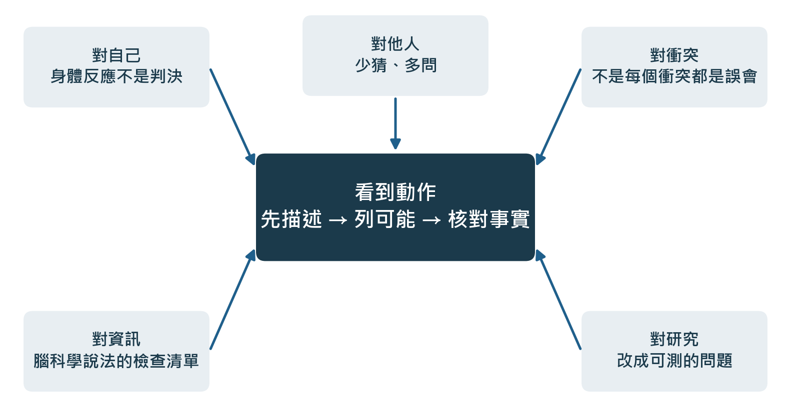
圖：自製
被問話時心跳加快、想移開視線：是常見的威脅反應，不代表「我心虛」，也不代表別人看得出來。
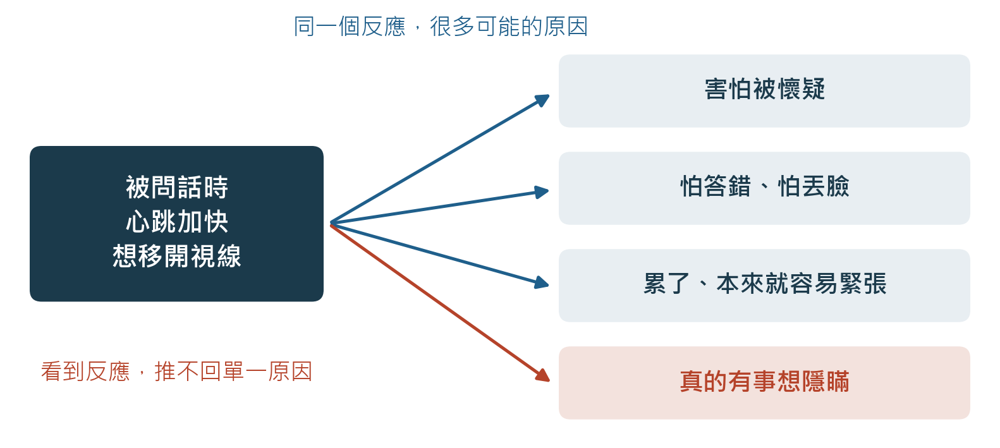
同一個反應有很多可能的原因；從反應推不回單一原因。
圖：自製
重新評估：換一種方式解釋情境
把感受說出名字（affect labeling）
睡眠
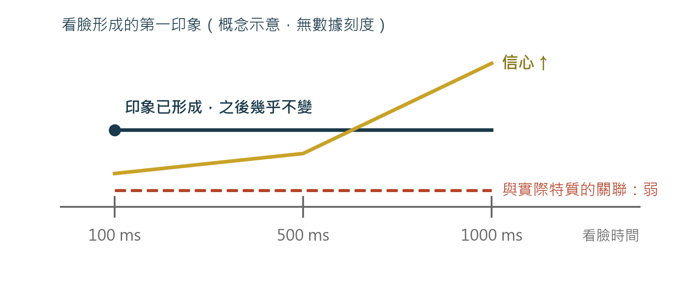
圖：自製概念示意，依 Willis & Todorov (2006) 的結果方向繪製，無數據刻度
圖：自製，依 Eyal, Steffel & Epley (2018) 的整體結果
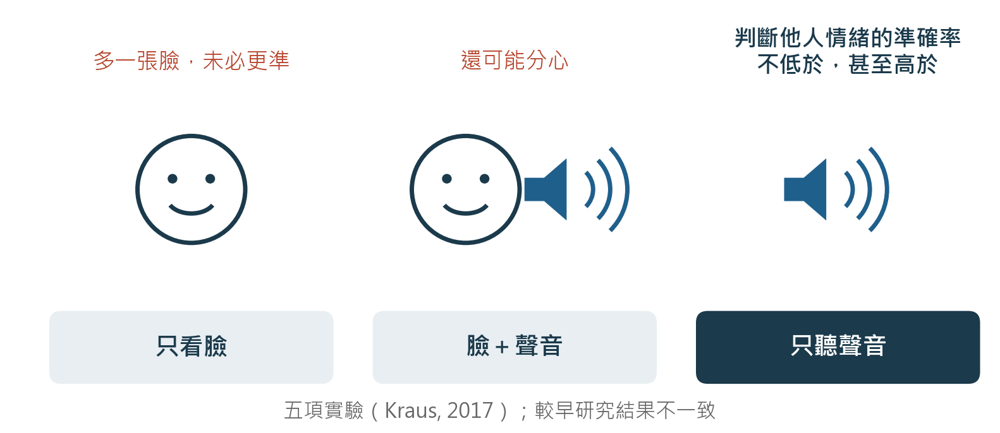
圖：自製，依 Kraus (2017) 的結果方向繪製
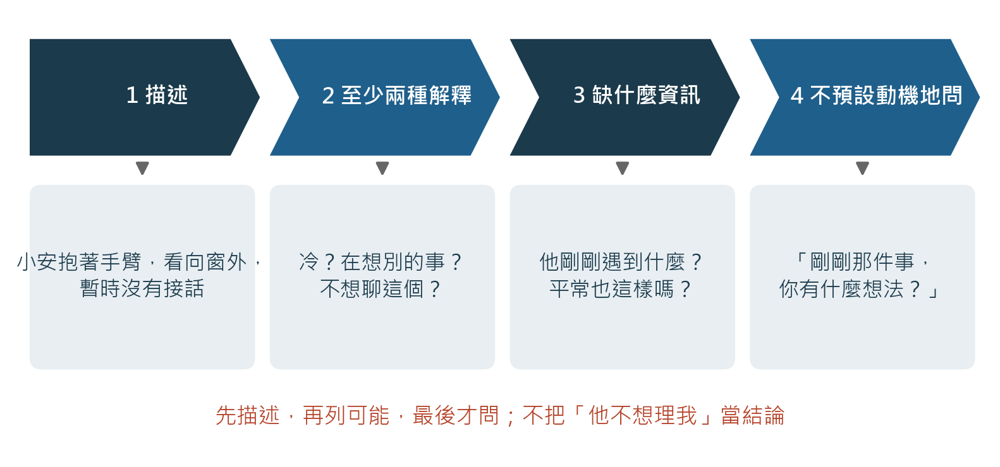
例：小安抱著手臂，看向窗外，暫時沒有接話。
圖：自製
改寫前
「你為什麼擺臉色？」
改寫後
「我剛剛說完後你沒有回應，我不確定你是不是沒聽到，要不要我再說一次？」
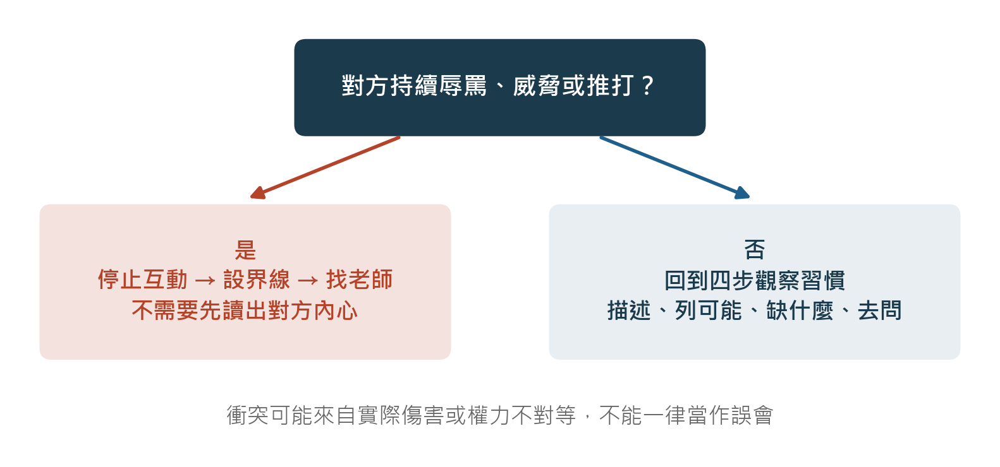
圖：自製
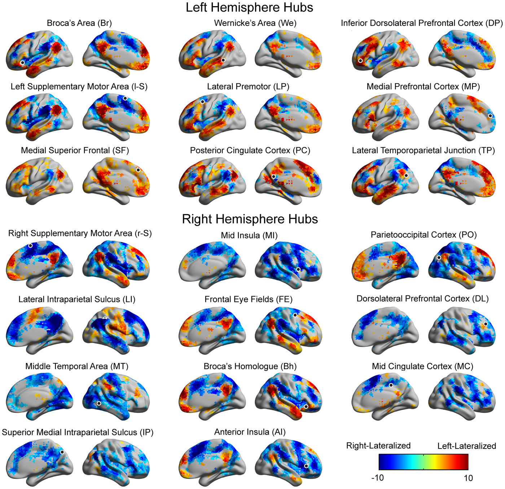
個別樞紐區的連結確實有左右偏側（上：左側網路；下：右側網路），但這是局部性質，沒有「整顆腦偏左或偏右」的人
圖：Nielsen et al. (2013), PLOS ONE, 8, e71275, Fig 3，CC BY
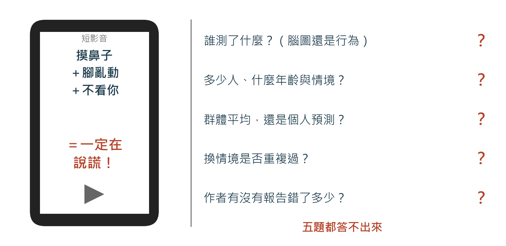
套用：「摸鼻子＋腳亂動＋不看你＝一定在說謊！」五題都答不出來。
圖：自製
| 欄位 | 提問 |
|---|---|
| 研究問題 | 「同學表現冷淡時，別人會怎麼解讀？」比「同學在想什麼？」可測 |
| 測量對象 | 他人評分、當事人回報、可核對事實，三者分開記錄 |
| 唯一改變的項目 | 只改一件事（例如回應等待時間），其餘固定 |
| 事先預測 | 寫下預測，容許結果不符 |
| 錯誤報告 | 記錄猜錯的次數，不只記錄猜對的 |
| 倫理 | 允許不參加、不回答；不對真實同學做「測謊」 |
5 題 quiz，每題 1 分鐘；最後一題心得，不計時。
心得：今天印象最深的一點、改變或沒改變的想法，寫一到三句。
「File:」開頭者皆位於 commons.wikimedia.org/wiki/。外部來源圖片僅縮放或裁切，未改動內容。
完整書目與查核層級見《講綱新增文獻查核》《課綱重構_證據與來源》《文獻查核與備課說明》。
中壢國中｜非語言溝通講座｜2026-09-20 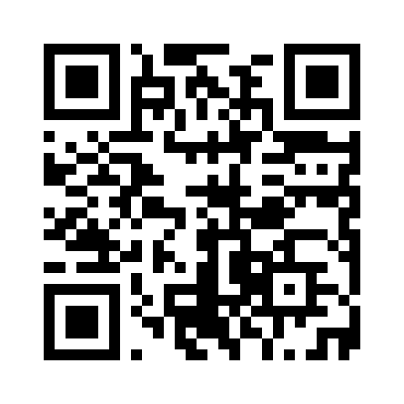